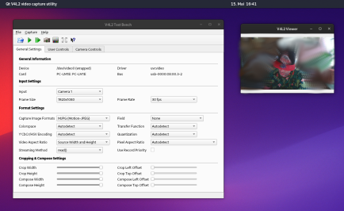
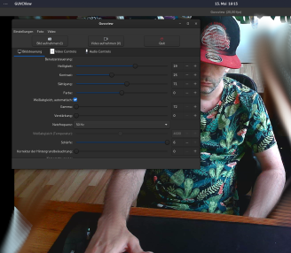

Webcams #
Setting up a webcam on Linux is easy.
In most cases, the device should be detected without any extra steps needed.
Check it:
v4l2-ctl --list-devices
needs v4l-utils installed
Per default you have at minimum two apps installed you can use to check how the webcam is working basically: v4l2-view ( a simple viewer) and v4l2-test-bench a qt-based config tool:

v4l2 test bench and viewer
In most cases setting done here will get used if you use the cam in other applications like Jitsi or even zoom skype or other crap you have to use 😉
B.T.W if you need to use zoom Jitsi or skype… Before you go through all the hassle of installing it, try using the web app, it’s usually easier and takes less effort.
https://www.skype.com/en/features/skype-web/
Only to show some examples…
There are a bunch of webcam clients/apps you can use on Linux on my testing a lot of them do not work properly, but I find GUVCView working smooth and without issues right out of the box.
And the app has both GTK and QT versions to choose from for installation:
community/guvcview Simple GTK+ interface for capturing and viewing video from v4l2 devices
community/guvcview-qt Simple Qt interface for capturing and viewing video from v4l2 devices

GUVCView gtk version
If you got any trouble or need some special setup the arch wiki will be the first read for you:
https://wiki.archlinux.org/title/Webcam_setup
Or if you want to follow deep into the rabbit hole:
https://www.linuxtv.org // https://www.kernel.org/ // V4L2_camera_overview